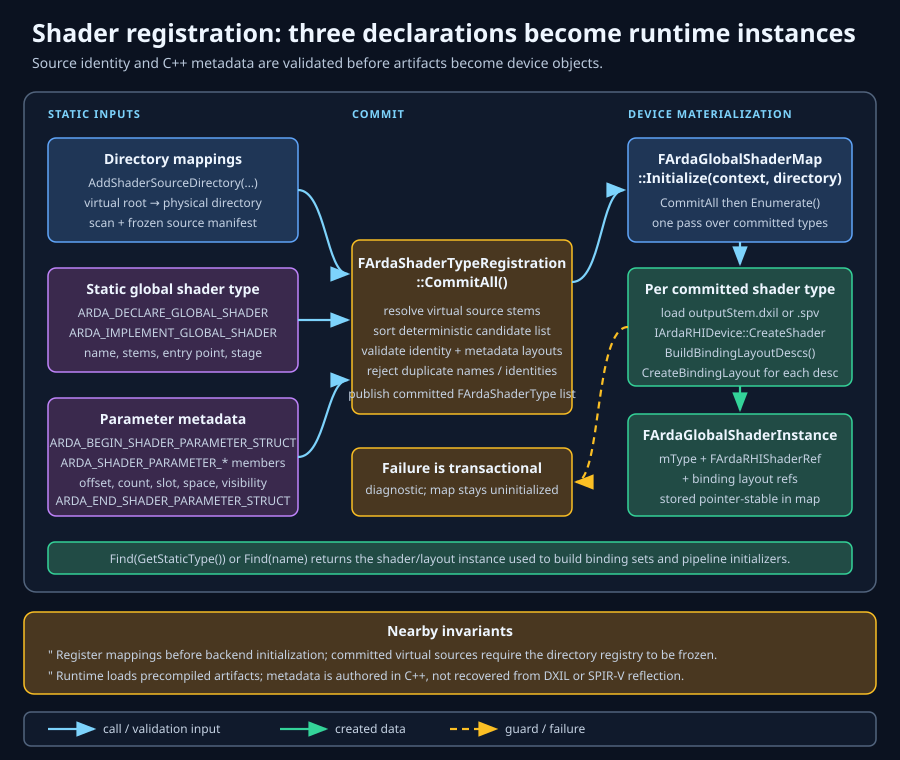
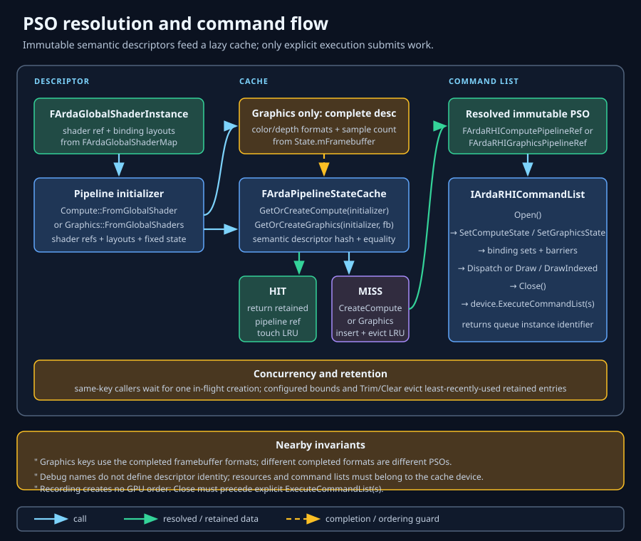
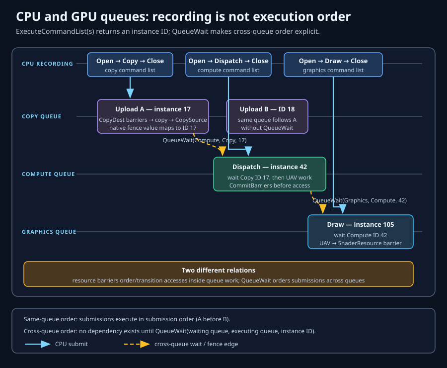

Start with a device; add only the systems you need
ArdaBackend quick user's guide
This is the shortest source-backed path from a CMake target to an initialized device context. From that common root, the guide branches into host-owned external resources, optional window presentation, shaders, compute, raster, and capability-gated ray tracing. A workload may write an externally owned texture or buffer and end without ever creating a window.
Objectives
After following this guide, you should be able to:
- choose an Arda-created or externally supplied D3D12/Vulkan device and retain its context;
- adopt a host-owned D3D12 or Vulkan device and import named resources without violating queue or lifetime contracts;
- stop after a headless or externally targeted workload when presentation is unnecessary;
- optionally adapt GLFW to
IArdaWindowSurfacewithout leaking native API types into renderer code; - choose the global-shader system or direct bytecode creation;
- create persistent resources, views, binding layouts, binding sets, and cached pipelines;
- record, close, submit, and present compute and raster commands in the required order;
- gate hardware ray tracing and assemble its BLAS, TLAS, pipeline, shader-table, and dispatch path without mistaking it for an existing complete sample; and
- propagate status, resize safely, and tear down in reverse ownership order.
Prerequisites and scope
- C++17, CMake, a supported compiler, and the dependencies configured by the repository root.
- GLFW only for the optional demonstrated window path; an engine host may supply no Arda window surface at all.
- DXC through
ARDASHIR_DXC_EXECUTABLEonly when compiling shader artifacts. - On Windows, a D3D12-capable system for D3D12; for Vulkan, a Vulkan loader/driver and Vulkan 1.3-compatible shader artifacts.
- Working knowledge of command lists, resource states, descriptors, thread-group dimensions, vertex/index buffers, and acceleration structures.
Read Getting started for lifecycle rationale, Shaders for registry contracts, and Commands for synchronization depth. This guide uses direct RHI calls where order matters and cites ARDGExample where the render graph supplies transitions and queue scheduling.
1. Link the target and include the public API
DEMONSTRATED Start with the exported backend target. Add the render graph, GLFW, or native Vulkan headers only when the selected integration uses them.
The repository currently defines these targets only from its source tree; it does not install a CMake package or provide a supported find_package(Ardashir) flow. Build your application from a parent CMake project that brings this repository in with add_subdirectory(path/to/Ardashir), or add the application target beneath this repository's root build after the root has added Source/ArdaBackend. In either case, the root build must run first so Dependencies.cmake configures EASTL, NVRHI, GLFW, Vulkan headers, and ARDASHIR_DXC_EXECUTABLE before the following link step.
add_executable(MyGpuApp ${MY_SOURCES})
target_compile_features(MyGpuApp PRIVATE cxx_std_17)
target_link_libraries(MyGpuApp PRIVATE
Ardashir::ArdaBackend
)
# Optional window adapter:
# target_compile_definitions(MyGpuApp PRIVATE GLFW_INCLUDE_NONE)
# target_link_libraries(MyGpuApp PRIVATE glfw)
#
# Optional when application/host code names Vulkan types directly:
if(TARGET Vulkan::Headers)
target_link_libraries(MyGpuApp PRIVATE Vulkan::Headers)
elseif(TARGET Vulkan-Headers)
target_link_libraries(MyGpuApp PRIVATE Vulkan-Headers)
endif()Include the aggregate header in application code:
#include "ArdaBackend.h"Device and context creation comes next. Shader compilation is intentionally deferred until after the execution environment is chosen; resource-only integrations should not have to read presentation or shader setup first.
2. Choose the device source and establish the context
Every path starts by choosing a backend, diagnostics policy, and device source. The resulting FArdaDeviceContext is the common root for resource creation and command submission; a window, swap chain, and shaders are optional consumers of that context.

Arda-created headless device
TESTED API PATH Use this branch for compute, offscreen rendering, resource processing, or tests that do not present. It is also the minimal setup from which the remaining non-presentation recipes operate.
using namespace arda;
backend::FArdaBackendConfiguration config;
config.mBackend = backend::DefaultBackend;
config.mDeviceSource = backend::EArdaDeviceSource::ArdaCreated;
config.mbEnableValidation = true;
config.mMessageCallback = &diagnostics; // Must outlive every retained device ref.
// Optional no-op unless the application uses the global-shader registry.
RegisterApplicationShaderDirectoriesBeforeBackendInitialization();
if (!backend::ConfigureBackend(config) || !backend::InitializeBackend())
return Fail(backend::GetBackendError());
const backend::FArdaDeviceContext& context = backend::GetDeviceContext();
rhi::FArdaRHIDeviceRef device = context.mDevice;
if (!device || !context.mQueueCapabilities.mbGraphics)
return Fail("The requested backend did not publish a graphics device.");Choose one branch before initialization
- External host device: set
mDeviceSourcetoExternalProvider, register the provider, and follow the next section before calling headlessInitializeBackend(). - Arda-owned window presentation: configure now, but do not call
InitializeBackend(). Continue to the optional window section and callInitializeBackendForPresentation()exactly once.
3. External device and named-resource setup
Use this branch when an engine already owns the native device, queues, resources, and presentation. It is headless/host-presented: configure EArdaDeviceSource for an external provider and call InitializeBackend, not presentation initialization. Read External devices and resources before integrating a production engine.
D3D12 provider recipe
TESTED API PATH Focused backend tests exercise provider registration and external D3D12 initialization. Implement IArdaExternalDeviceProvider, returning a copied FArdaExternalD3D12DeviceDesc with the required device and graphics queue. The optional token should pin the host/plugin lifetime.
D3D12Provider provider(device, graphicsQueue, pluginLifetime);
if (!arda::backend::RegisterExternalDeviceProvider(provider))
return Fail(arda::backend::GetBackendError());
arda::backend::FArdaBackendConfiguration config;
config.mBackend = arda::backend::EArdaBackendType::D3D12;
config.mDeviceSource = arda::backend::EArdaDeviceSource::ExternalProvider;
RegisterApplicationShaderDirectoriesBeforeBackendInitialization(); // Optional.
if (!arda::backend::ConfigureBackend(config) ||
!arda::backend::InitializeBackend())
return Fail(arda::backend::GetBackendError());
arda::rhi::FArdaRHIDeviceRef device =
arda::backend::GetDeviceContext().mDevice;NVRHI retains required COM references but never assumes host ownership. Establish an exclusive/coordinated host queue interval around every Arda submission, then release all copied Arda references before native/plugin teardown.
Vulkan provider recipe
SYNTHESIZED / CONTRACT PATH Fill FArdaExternalVulkanDeviceDesc with the instance, physical and logical devices, exact graphics queue family/index, optional queues, and copied enabled-extension names. Vulkan 1.3 dynamic rendering, synchronization2, and timeline semaphore must be enabled. Physical-device support is validated, while the enabled-feature description remains a host assertion.
VulkanProvider provider(
instance, physicalDevice, device,
graphicsQueue, graphicsFamily, graphicsIndex,
enabledInstanceExtensions, enabledDeviceExtensions,
pluginLifetime);
RegisterAndInitializeExternal(
provider, arda::backend::EArdaBackendType::Vulkan); // Host helper.Raw Vulkan handles are not reference-counted. Host/token lifetime and Vulkan host synchronization must cover every Arda wrapper and GPU use. This recipe is assembled from implemented contracts; it is not an end-to-end Vulkan or Unreal sample.
Named texture and buffer recipe
SYNTHESIZED / CONTRACT PATH Implement IArdaExternalResourceProvider with a stable name and generation-aware IDs. Resolution returns a truthful complete native description and canonical lifetime token. Register before lookup, then call ImportExternalTexture or ImportExternalBuffer.
EngineResourceProvider resources("Engine", pluginLifetime);
if (!arda::backend::RegisterExternalResourceProvider(resources))
return Fail(arda::backend::GetBackendError());
// Host has acquired queue serialization and supplied the real incoming states.
auto target = arda::backend::ImportExternalTexture("Engine", targetId);
auto data = arda::backend::ImportExternalBuffer("Engine", dataId);
if (!target || !data)
return Fail(!target ? target.mStatus.mMessage : data.mStatus.mMessage);
RecordSubmitAndRetireInsideHostQueueInterval(target.mValue, data.mValue);
// The workload may end here. No window or Arda swap chain is required.The wrapper retains the token. The same native handle with a different token or descriptor is a conflict. Only texture and buffer imports are exposed; arbitrary native heaps and existing acceleration structures are not supported. For Unreal, use typed D3D12/Vulkan RHI adapters and an engine-supported queue-coordination primitive; no checked-in end-to-end Unreal sample exists.
4. Optional: add Arda-owned window presentation
DEMONSTRATED Skip this section for headless work or host-owned presentation. For an Arda-created presented device, create GLFW with GLFW_CLIENT_API = GLFW_NO_API. Your adapter implements three IArdaWindowSurface responsibilities:
- return an encoded HWND from
glfwGetWin32Windowfor D3D12 on Windows; - copy the names returned by
glfwGetRequiredInstanceExtensionsfor Vulkan initialization; and - call
glfwCreateWindowSurfacewith the backend-provided Vulkan instance, returning the encoded surface or a useful error string.
glfwWindowHint(GLFW_CLIENT_API, GLFW_NO_API);
GLFWwindow* window = glfwCreateWindow(width, height, "My GPU app", nullptr, nullptr);
class GlfwSurface final : public arda::backend::IArdaWindowSurface
{
public:
explicit GlfwSurface(GLFWwindow* window) : mWindow(window) {}
arda::backend::FArdaNativeObject GetD3D12WindowHandle() const noexcept override;
eastl::vector<const char*> GetVulkanInstanceExtensions() const override;
arda::backend::FArdaNativeObject CreateVulkanSurface(
arda::backend::FArdaNativeObject instance,
eastl::string& outError) override;
private:
GLFWwindow* mWindow = nullptr; // Borrowed; window outlives swap chain.
};The checked-in GLFW adapters are the canonical implementation pattern. Keep extension-name storage valid through initialization, keep the GLFW window alive through swap-chain destruction, and do not destroy the Vulkan surface yourself: the backend owns the surface created through this callback.
Initialize the configured presentation branch
eastl::unique_ptr<arda::backend::IArdaSwapChain> swapChain;
const auto init = arda::backend::InitializeBackendForPresentation(
glfwSurface, framebufferWidth, framebufferHeight, swapChain);
if (init != arda::backend::EArdaInitializeResult::Success)
return Fail(arda::backend::GetBackendError());
const arda::backend::FArdaDeviceContext& context =
arda::backend::GetDeviceContext();
arda::rhi::FArdaRHIDeviceRef device = context.mDevice;
if (!device || !context.mQueueCapabilities.mbGraphics)
return Fail("A graphics queue is required for presentation.");ConfigureBackend must already have selected ArdaCreated. Do not call headless initialization first, and do not use this function with an external provider: external engines acquire, synchronize, and present their own frame images.
5. Choose a shader-loading path

Compile backend-specific artifacts
D3D12 consumes DXIL; Vulkan consumes SPIR-V. NVRHITest compiles vs_6_0/ps_6_0 twice, while ARDGExample also compiles cs_6_0 and applies Vulkan binding shifts matching Arda's register classes.
# D3D12
dxc -nologo -T cs_6_0 -E MainCS -Fo MainCS.dxil MyShaders.hlsl
# Vulkan
dxc -nologo -spirv -fspv-target-env=vulkan1.3 \
-fvk-t-shift 0 0 -fvk-s-shift 128 0 \
-fvk-b-shift 256 0 -fvk-u-shift 384 0 \
-T cs_6_0 -E MainCS -Fo MainCS.spv MyShaders.hlslCopy outputs beside the executable or pass their actual deployment directory to your shader loader or global shader map. A successful native device initialization does not prove that the matching artifact set exists.
Exact ray-tracing test artifacts
TESTED API PATH With ARDASHIR_BUILD_TESTS=ON, the backend test target compiles ArdaRayTracingTest.hlsl as a lib_6_3 DXIL library and as Vulkan 1.2 SPIR-V with SPV_KHR_ray_tracing. The source exports one ray-generation function named RayGen and declares no resources, so this artifact uses no Vulkan register shifts. If you add bindings, define and apply one policy consistently in shader metadata and compilation.
Path A: virtual directory and global shader map
DEMONSTRATED This is the ARDGExample path and is convenient when typed parameters and pipeline initializers should derive from registered shaders.
class FMyComputeShader final : public arda::backend::FArdaGlobalShader
{
public:
ARDA_BEGIN_SHADER_PARAMETER_STRUCT(FParameters)
ARDA_SHADER_TEXTURE_UAV(mOutput, 0, 0,
arda::rhi::EArdaRHIShaderStage::Compute)
ARDA_END_SHADER_PARAMETER_STRUCT()
ARDA_DECLARE_GLOBAL_SHADER(FMyComputeShader);
};
ARDA_IMPLEMENT_GLOBAL_SHADER(
FMyComputeShader,
"/MyApp/Shaders/MyCompute.hlsl",
"MyComputeCS", "MainCS",
arda::rhi::EArdaRHIShaderStage::Compute)The registration helper shown in device setup must map the virtual root before backend initialization freezes the shader registry. After the context exists, load artifacts and find the registered shader:
auto directoryStatus = arda::backend::AddShaderSourceDirectoryMapping(
"/MyApp/Shaders", MY_APP_SHADER_SOURCE_DIRECTORY);
if (!directoryStatus)
return Fail(directoryStatus.mMessage);
// ConfigureBackend + the selected initialization branch happen here.
arda::backend::FArdaGlobalShaderMap shaderMap;
if (!shaderMap.Initialize(arda::backend::GetDeviceContext(), artifactDirectory))
{
const auto& diagnostics = shaderMap.GetDiagnostics();
return Fail(diagnostics.empty()
? "Global shader map initialization failed without diagnostics."
: diagnostics.back().mMessage);
}
const auto* shader = shaderMap.Find(FMyComputeShader::GetStaticType());
if (!shader)
return Fail("Registered compute shader is absent from the global map.");Virtual paths must be rooted, unique, and beneath the mapped root. The artifact basename passed to the implementation macro is resolved as .dxil or .spv by the selected backend.
Path B: direct bytecode
DEMONSTRATED NVRHITest loads files into byte vectors, fills FArdaRHIShaderDesc, and calls CreateShader. The byte vector only needs to remain valid during creation.
arda::rhi::FArdaRHIShaderDesc desc;
desc.mStage = arda::rhi::EArdaRHIShaderStage::Compute;
desc.mBytecode = bytes.data();
desc.mBytecodeSize = bytes.size();
desc.mEntryPoint = "MainCS";
desc.mDebugName = "My compute shader";
auto shaderResult = device->CreateShader(desc);
if (!shaderResult)
return Fail(shaderResult.mStatus.mMessage);
arda::rhi::FArdaRHIShaderRef computeShader = eastl::move(shaderResult.mValue);6. Create persistent resources, views, and bindings
TESTED API PATH Device-created resources are intrusive references. Store persistent buffers, textures, views, layouts, sets, shaders, and pipelines in a renderer object whose device reference outlives them.
// Persistent structured buffer.
arda::rhi::FArdaRHIBufferDesc bufferDesc;
bufferDesc.mByteSize = elementCount * sizeof(Element);
bufferDesc.mStructureStride = sizeof(Element);
bufferDesc.mUsage = arda::rhi::EArdaRHIBufferUsage::Structured |
arda::rhi::EArdaRHIBufferUsage::ShaderResource |
arda::rhi::EArdaRHIBufferUsage::UnorderedAccess;
bufferDesc.mInitialState = arda::rhi::EArdaRHIResourceState::UnorderedAccess;
bufferDesc.mbKeepInitialState = true;
bufferDesc.mDebugName = "Persistent elements";
auto buffer = device->CreateBuffer(bufferDesc);
if (!buffer) return Fail(buffer.mStatus.mMessage);
// Persistent storage texture.
arda::rhi::FArdaRHITextureDesc textureDesc;
textureDesc.mWidth = width;
textureDesc.mHeight = height;
textureDesc.mFormat = arda::rhi::EArdaRHIFormat::RGBA8UNorm;
textureDesc.mUsage = arda::rhi::EArdaRHITextureUsage::ShaderResource |
arda::rhi::EArdaRHITextureUsage::UnorderedAccess;
textureDesc.mDebugName = "Compute output";
auto texture = device->CreateTexture(textureDesc);
if (!texture) return Fail(texture.mStatus.mMessage);Views select interpretation and subresources; layouts declare shader-visible slots; binding sets attach actual resources. The exact descriptor items are application-specific. In the following pattern, MakeOutputUavView(), MakeComputeLayout(), and MakeComputeBindings(...) are explicit placeholders that must return valid FArdaRHIViewDesc, FArdaRHIBindingLayoutDesc, and FArdaRHIBindingSetDesc. Consult their canonical member contracts and RHI types & resources.
auto uav = device->CreateUnorderedAccessView(
texture.mValue, MakeOutputUavView()); // PLACEHOLDER
if (!uav)
return Fail(uav.mStatus.mMessage);
auto layout = device->CreateBindingLayout(
MakeComputeLayout()); // PLACEHOLDER
if (!layout)
return Fail(layout.mStatus.mMessage);
auto bindings = device->CreateBindingSet(
MakeComputeBindings(layout.mValue, uav.mValue)); // PLACEHOLDER
if (!bindings)
return Fail(bindings.mStatus.mMessage);With global-shader parameters, prefer metadata-driven creation: populate the generated parameter struct and call its static metadata CreateBindingSet against the shader's binding layout, as ARDGExample does for its camera constant buffer.
7. Create PSO initializers and a cache
DEMONSTRATED ARDGExample owns one FArdaPipelineStateCache per renderer/device and keeps reusable initializers.

arda::backend::FArdaPipelineStateCache psoCache(device);
auto computeInit =
arda::backend::FArdaComputePipelineStateInitializer::FromGlobalShader(
*computeGlobalShader, "Compute pipeline");
arda::rhi::FArdaRHIGraphicsPipelineDesc fixedState;
fixedState.mRasterState.mCullMode = arda::rhi::EArdaRHICullMode::None;
fixedState.mDepthStencilState.mbDepthTest = false;
fixedState.mDepthStencilState.mbDepthWrite = false;
fixedState.mDebugName = "Raster pipeline";
auto graphicsInit =
arda::backend::FArdaGraphicsPipelineStateInitializer::FromGlobalShaders(
*vertexGlobalShader, pixelGlobalShader, inputLayout, fixedState);The initializer path is designed for global shaders. Direct-bytecode users may instead create FArdaRHIComputePipelineDesc or FArdaRHIGraphicsPipelineDesc and call the device creation methods directly, as NVRHITest does for raster.
8. If presenting, run the frame in the required order
DEMONSTRATED The portable frame invariant is:
This section applies only to the caller-owned IArdaSwapChain returned by Arda-created presentation initialization. Headless workloads skip it. External integrations use the host's acquire/synchronization/present sequence described earlier.
AcquireFrame → PrepareSubmit → execute submitted graphics work → Present.
Recording can occur after acquisition and before PrepareSubmit. For direct RHI, call PrepareSubmit immediately before ExecuteCommandList. This is not cosmetic: the Vulkan implementation queues the image-available wait during acquisition and queues the render-finished signal in PrepareSubmit; the following graphics submission sits between those semaphore operations. D3D12 currently implements PrepareSubmit as a no-op, but portable code must still call it.

arda::rhi::FArdaRHIFramebufferRef framebuffer;
if (!swapChain->AcquireFrame(framebuffer))
return Fail(swapChain->GetError());
auto commandResult = device->CreateCommandList(
arda::rhi::EArdaRHIQueueType::Graphics);
if (!commandResult) return Fail(commandResult.mStatus.mMessage);
auto commandList = eastl::move(commandResult.mValue);
if (auto s = commandList->Open(); !s) return Fail(s.mMessage);
// Record transitions, compute/raster/RT commands, and transition back to Present.
if (auto s = commandList->Close(); !s) return Fail(s.mMessage);
swapChain->PrepareSubmit();
auto submission = device->ExecuteCommandList(commandList);
if (!submission) return Fail(submission.mStatus.mMessage);
if (!swapChain->Present()) return Fail(swapChain->GetError());Open begins recording, Close ends it, and only a closed list is submitted. Backend tests exercise CreateCommandList → Open → Close → ExecuteCommandList, then Reset → Close → ExecuteCommandList. Check every returned status.

9. Record compute work
DEMONSTRATED ARDGExample creates a compute state, attaches a binding set, asks the cache to bind the compute PSO, and dispatches thread groups through render-graph dispatch passes.
arda::rhi::FArdaRHIComputeState computeState;
computeState.mBindings.push_back(computeBindingSet);
auto status = psoCache.SetComputePipelineState(
*commandList, computeInit, eastl::move(computeState));
if (!status) return Fail(status.mMessage);
const uint32_t groupsX = (width + 7) / 8; // Shader uses [numthreads(8,8,1)].
const uint32_t groupsY = (height + 7) / 8;
commandList->Dispatch(groupsX, groupsY, 1);For a directly created pipeline, set FArdaRHIComputeState fields according to its canonical contract, then call SetComputeState and Dispatch. Transition SRVs to shader-resource state and UAVs to unordered-access state first; retain automatic barriers or explicitly call state/barrier methods consistently. Dispatch dimensions are group counts, not thread counts.
10. Record raster work
DEMONSTRATED The acquired framebuffer already identifies the swap-chain color target. Off-screen or depth attachments use a caller-created FArdaRHIFramebufferDesc and CreateFramebuffer.
const uint32_t width = swapChain->GetWidth();
const uint32_t height = swapChain->GetHeight();
arda::rhi::FArdaRHIGraphicsState graphics;
graphics.mPipeline = graphicsPipeline; // Omit when cache call supplies it.
graphics.mFramebuffer = framebuffer;
graphics.mBindings = { cameraBindings, materialBindings };
graphics.mVertexBuffers.push_back({ vertexBuffer, 0, 0 });
graphics.mIndexBuffer = indexBuffer;
graphics.mIndexFormat = arda::rhi::EArdaRHIFormat::R32UInt;
graphics.mViewports.push_back(
{ 0.f, float(width), 0.f, float(height), 0.f, 1.f });
graphics.mScissors.push_back(
{ 0, int32_t(width), 0, int32_t(height) });
const uint32_t indexCount = meshIndexCount; // Actual uploaded R32 index count.
auto status = commandList->SetGraphicsState(graphics);
if (!status) return Fail(status.mMessage);
commandList->DrawIndexed({ indexCount });
// Or for a procedural triangle:
// commandList->Draw({ 3 });meshIndexCount is an application value: set it to the number of uploaded indices, not the index-buffer byte size or vertex count.
With the cache, replace SetGraphicsState with SetGraphicsPipelineState, passing the initializer and state. Ensure color/depth formats, sample count, input layout, and bound framebuffer are pipeline-compatible. Transition the acquired color texture from Present to render-target use before drawing and back to Present before closing; the checked-in render-graph examples declare the external texture's initial Present state and let the graph insert these transitions.
11. Add capability-gated hardware ray tracing
SYNTHESIZED / NOT YET COVERED BY AN END-TO-END SAMPLE ArdaBackend exposes the complete component path, but the repository does not contain a checked-in application that builds geometry, creates BLAS/TLAS, populates a shader table, and calls DispatchRays. ArdaBackendTests verifies capability gating, an empty TLAS creation path, D3D12 library extraction or Vulkan direct RT shader creation, and RT pipeline cache behavior. Treat the sequence below as an integration checklist, not a demonstrated sample.
10.1 Gate both levels of support
const auto& caps = device->GetCapabilities();
if (!caps.mbRayTracing || !caps.mbRayTracingAccelStruct)
{
// Disable the RT renderer and keep the raster path.
return UseRasterFallback();
}mbRayTracing gates RT shaders/pipelines; mbRayTracingAccelStruct gates acceleration structures. Do not infer either from the selected backend name.
10.2 Create stage shaders
The public stage enum includes ray generation, miss, closest-hit, any-hit, intersection, and callable. The tested D3D12 path calls CreateShaderLibrary and extracts exports with GetShaderFromLibrary. The tested Vulkan path creates each stage from SPIR-V with CreateShader.
// D3D12 library example; repeat extraction for Miss/ClosestHit/etc.
auto library = device->CreateShaderLibrary(
rtBytes.data(), rtBytes.size(), "My RT library");
if (!library) return Fail(library.mStatus.mMessage);
auto rayGen = device->GetShaderFromLibrary(
library.mValue, "RayGen",
arda::rhi::EArdaRHIShaderStage::RayGeneration, "RayGen");
if (!rayGen) return Fail(rayGen.mStatus.mMessage);
// Vulkan alternative: FArdaRHIShaderDesc with RayGeneration/Miss/etc.,
// SPIR-V bytecode, and each entry point, then device->CreateShader(desc).10.3 Create and build BLAS, then TLAS
The following names are intentional placeholders:
geometry: a validFArdaRHIRayTracingGeometryDescdescribing retained vertex/index or AABB resources;blasDesc/tlasDesc: validFArdaRHIAccelStructDescvalues with level, capacity, and build inputs consistent with the canonical contract;instance: a validFArdaRHIRayTracingInstanceDescreferencing the built BLAS with transform, mask, and hit-group contribution; andbuildFlags: anEArdaRHIAccelStructBuildFlagschoice applied consistently to creation/build policy.
auto blas = device->CreateAccelStruct(blasDesc); // PLACEHOLDER descriptor
if (!blas) return Fail(blas.mStatus.mMessage);
auto tlas = device->CreateAccelStruct(tlasDesc); // PLACEHOLDER descriptor
if (!tlas) return Fail(tlas.mStatus.mMessage);
eastl::vector<arda::rhi::FArdaRHIRayTracingGeometryDesc> geometries{geometry};
auto s = commandList->BuildBottomLevelAccelStruct(
*blas.mValue, geometries, buildFlags);
if (!s) return Fail(s.mMessage);
eastl::vector<arda::rhi::FArdaRHIRayTracingInstanceDesc> instances{instance};
s = commandList->BuildTopLevelAccelStruct(
*tlas.mValue, instances, buildFlags);
if (!s) return Fail(s.mMessage);Build commands are asynchronous GPU work. Preserve geometry buffers and BLAS/TLAS references, order TLAS after its BLAS build, and insert the state/barrier dependencies required by the command-list contract.
10.4 Create the pipeline and populate the shader table
pipelineDesc is a placeholder FArdaRHIRayTracingPipelineDesc. Populate shader exports/hit groups and choose payload, attribute, and recursion sizes that exactly match HLSL. tableDesc is a placeholder FArdaRHIShaderTableDesc with capacities sufficient for every record.
auto pipeline = device->CreateRayTracingPipeline(pipelineDesc); // PLACEHOLDER
if (!pipeline) return Fail(pipeline.mStatus.mMessage);
auto table = device->CreateShaderTable(
pipeline.mValue, tableDesc); // PLACEHOLDER
if (!table) return Fail(table.mStatus.mMessage);
auto s = device->SetShaderTableRayGeneration(
table.mValue, "RayGen", rayGenLocalBindings); // Optional bindings
if (!s) return Fail(s.mMessage);
auto missIndex = device->AddShaderTableMiss(
table.mValue, "Miss", missLocalBindings);
if (!missIndex) return Fail(missIndex.mStatus.mMessage);
auto hitIndex = device->AddShaderTableHitGroup(
table.mValue, "PrimaryHitGroup", hitLocalBindings);
if (!hitIndex) return Fail(hitIndex.mStatus.mMessage);10.5 Bind and dispatch
rtGlobalBindings is a placeholder binding set containing the TLAS, output UAV, camera/constants, and any scene resources declared by the pipeline layouts.
arda::rhi::FArdaRHIRayTracingState rtState;
rtState.mPipeline = pipeline.mValue;
rtState.mShaderTable = table.mValue;
rtState.mBindings = { rtGlobalBindings }; // PLACEHOLDER
auto s = commandList->SetRayTracingState(rtState);
if (!s) return Fail(s.mMessage);
s = commandList->DispatchRays(width, height, 1);
if (!s) return Fail(s.mMessage);Transition the output to UAV before dispatch and to its next consumer state afterward. If the output is the swap-chain image, return it to Present before submission; if it is an intermediate texture, transition it for copy or raster sampling. Validate shader export spelling, table capacity, local/global binding compatibility, TLAS completion, and backend-specific artifacts before debugging shader logic.
12. Handle resize at the frame boundary
DEMONSTRATED GLFW callbacks record only positive framebuffer dimensions. The main loop consumes the pending size before acquiring the next frame and calls IArdaSwapChain::Resize.
uint32_t newWidth = 0, newHeight = 0;
if (window.ConsumeResize(newWidth, newHeight))
{
if (!swapChain->Resize(newWidth, newHeight))
return Fail(swapChain->GetError());
RecreateSizeDependentResources(newWidth, newHeight);
}The swap chain waits as needed and recreates its presentation resources. Your application must also recreate depth buffers, size-dependent storage textures, framebuffers, camera projection data, and any descriptor sets that reference replaced resources. Never call resize with zero dimensions; defer while minimized.
13. Preserve diagnostics and propagate status
DEMONSTRATED Install a long-lived IArdaDiagnosticCallback, enable validation in development, and turn each failed operation into the caller's error immediately.
template<class T>
bool Take(arda::rhi::TArdaRHIResult<T>& result, T& out, eastl::string& error)
{
if (!result)
{
error = result.mStatus.mMessage;
return false;
}
out = eastl::move(result.mValue);
return true;
}
bool Check(const arda::rhi::FArdaRHIStatus& status, eastl::string& error)
{
if (status) return true;
error = status.mMessage;
return false;
}Use FArdaRHIStatus for status-returning calls and TArdaRHIResult for value-plus-status calls. Copy GetBackendError immediately after lifecycle failure and swapChain->GetError() immediately after presentation failure. Add operation name, backend, frame, queue, resource debug names, and dimensions to logs. A successful submission ID proves acceptance, not GPU completion.
14. Shut down in reverse dependency order
DEMONSTRATED The sample shutdown guards wait for the swap chain, destroy it, then call backend shutdown. A production renderer should release all dependent objects explicitly first.
- Stop frame production, background uploads, and pipeline/shader work.
- Wait for the swap chain or device to become idle.
- Release command lists and per-frame framebuffers.
- Release shader tables, RT pipelines, TLAS, BLAS, graphics/compute pipelines, binding sets/layouts, views, textures, and buffers.
- Clear the PSO cache and global shader map.
- Destroy the caller-owned swap chain before the GLFW window.
- Release retained device references, then call
ShutdownBackend. - Destroy the diagnostic callback only after shutdown.
Intrusive references can keep a device/resource alive after the process-wide context is cleared, but relying on that behavior makes native teardown timing unpredictable. Keep object ownership visibly nested under the renderer's device lifetime.
For an externally supplied device, this order is mandatory across the host boundary: all copied Arda device/resource refs must be gone before the host destroys native device, Vulkan allocation/loader state, or plugin state. Shutdown waits idle but cannot revoke references copied elsewhere.
Curated API path checklists
These are task paths, not an API dump. Each link targets the exact stable canonical anchor.
Device and context startup
FArdaBackendConfigurationandConfigureBackend.InitializeBackendfor Arda-created headless work, or register anIArdaExternalDeviceProviderfirst.GetDeviceContextandGetCapabilities.
Optional presented startup
AddShaderSourceDirectoryMappingbefore initialization when using global shaders.IArdaWindowSurfaceandInitializeBackendForPresentation.
Global shaders and cached PSOs
ARDA_DECLARE_GLOBAL_SHADERandARDA_IMPLEMENT_GLOBAL_SHADER.FArdaGlobalShaderMap,Initialize, andFind.FromGlobalShaderorFromGlobalShaders.SetComputePipelineStateorSetGraphicsPipelineState.
Direct resources and commands
CreateBuffer,CreateTexture,CreateShaderResourceView, andCreateUnorderedAccessView.CreateBindingLayoutandCreateBindingSet.CreateCommandList,Open,Close, andExecuteCommandList.
Presented compute and raster
AcquireFrame.SetComputeStateandDispatch.SetGraphicsState,Draw, orDrawIndexed.PrepareSubmit, execute, thenPresent.
Hardware ray tracing
mbRayTracingandmbRayTracingAccelStruct.CreateShaderLibrary/GetShaderFromLibraryorCreateShader.CreateAccelStruct,BuildBottomLevelAccelStruct, andBuildTopLevelAccelStruct.CreateRayTracingPipelineandCreateShaderTable.SetShaderTableRayGeneration,AddShaderTableMiss, andAddShaderTableHitGroup.SetRayTracingStateandDispatchRays.
Summary
- Choose the device source first, initialize exactly one branch, and retain the resulting device context.
- Headless and external workloads can write resources and finish without creating a window or swap chain.
- When shaders are used, build both DXIL and SPIR-V artifacts and select them by the initialized backend.
- Register virtual shader roots before backend initialization; alternatively create shaders directly from bytes.
- Keep device-owned objects in a renderer lifetime and check every status/result.
- For direct presentation, acquire, record and close, prepare submission, execute on graphics, then present.
- Compute requires compatible bindings/state before dispatch; raster requires compatible framebuffer, pipeline, bindings, viewport/scissor, and geometry before draw.
- Ray tracing is capability-gated and available as implemented/tested API components, but the complete dispatch recipe remains synthesized because no end-to-end RT sample is checked in.
- Resize before the next acquire and recreate all application-owned size-dependent resources.
- Stop work, wait, release dependents, destroy any optional swap chain, release the device, and shut down the backend.
Next steps and further reading
- Getting started — backend selection, initialization transaction, and teardown rationale.
- Shaders — virtual directories, registration, artifacts, metadata, and diagnostics.
- Pipeline states — compatibility keys and cache behavior.
- RHI types & resources — descriptor, view, binding, state, and ownership contracts.
- Commands — command-list states, barriers, queues, submission, and synchronization.
- Presentation — swap-chain platform behavior and resize details.
- Diagnostics — callbacks, result propagation, and escalation.
- External interop — complete host-owned device, resource, queue, lifetime, and presentation contracts.
- Canonical API reference — exact signatures and member-level contracts.